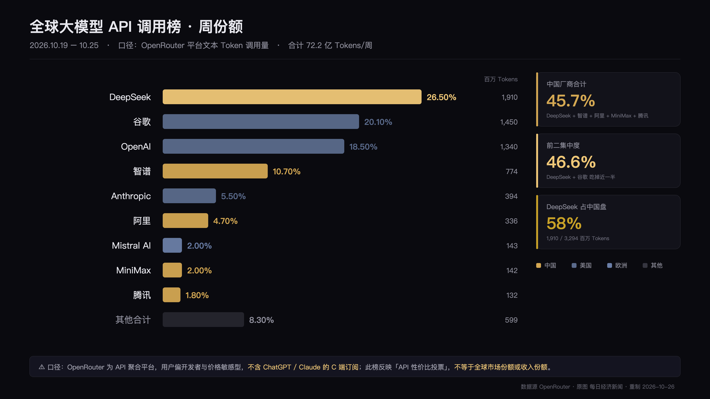

大模型 API 调用榜：第一名不是最赚钱的那家
OpenRouter 周榜 · 2026.10.19–10.25 · 72.2 亿 Tokens
看到这张榜我先愣了一下。不是因为第一名是 DeepSeek，是因为第五名是 Anthropic——一家人均收入远超榜单排名的公司。这张看起来最客观的数据榜，最容易读错。
DeepSeek 26.5%，排第一，这并不意外。
意外的是 Anthropic，5.5%，排第五。
一家 2026 年 ARR 在百亿美元量级的公司，在一张「全球大模型调用榜」上占比还不如一家国内创业公司。这说明的不是 Anthropic 弱，是这张榜根本测不到它。
| # | 厂商 | 调用量（百万 Tokens） | 占比 |
|---|---|---|---|
| 1 | DeepSeek | 1,910 | 26.50% |
| 2 | 谷歌 | 1,450 | 20.10% |
| 3 | OpenAI | 1,340 | 18.50% |
| 4 | 智谱 | 774 | 10.70% |
| 5 | Anthropic | 394 | 5.50% |
| 6 | 阿里 | 336 | 4.70% |
| 7 | Mistral AI | 143 | 2.00% |
| 8 | MiniMax | 142 | 2.00% |
| 9 | 腾讯 | 132 | 1.80% |
| — | 其他合计 | 599 | 8.30% |

中国厂商五家加起来 45.7%，接近一半。前二（DeepSeek + 谷歌）合计 46.6%，吃掉近半市场。
数字就在那儿。但接下来三个坑，每一个都能让人得出完全错误的结论。
图表的标题写着「全球 AI 大模型每周 Token 调用榜」。但数据源只有 OpenRouter。
OpenRouter 是一个 API 聚合平台，用户以开发者和中小团队为主，价格敏感度高、开源模型偏好强。它上面跑的是「按 token 付费的 API 调用」。
而 ChatGPT、Claude 的主要收入来自订阅——那些用户一次 API 调用都不会在这张榜上出现。
准确的说法是：这是「OpenRouter 平台内的文本请求份额」，不是「全球市场份额」。标题大于内容，是数据类内容最常见的毛病。
图表标注单位是「百万 Tokens」，合计 7,220 百万，也就是 72 亿 tokens 一周，约 10 亿一天。
这个量级，和 OpenRouter 公开披露过的日处理规模不在一个数量级上。
要么单位标错了（应该是「十亿」），要么这是某个特定细分口径。我没能核实到原始出处，所以只能说存疑。引用之前回原始页面看一眼，这件事不能省。
Anthropic 5.5%，OpenAI 18.5%。但这两家 2026 年的 ARR 都在百亿美元级。
钱从哪来？订阅、企业合同、云厂商渠道。这些全都不经过聚合平台。
所以这张榜测的是「谁被开发者在 API 里调用得最多」，不是「谁赚得最多」。把这两个混为一谈，是这类榜单最常见的误读。
45.7% 这个数字不假，但它只说明「开源 / 低价 API」这一层的优势。换到企业市场、换到 C 端订阅，结论会完全不同。
这是全表最反直觉的一格。它说明在国内的开发者市场里，某些模型已经不是「备选」，而是默认选项。
中国厂商内部也是长尾结构，头部极度集中。
OpenRouter 用户的选型逻辑很简单：效果够用，价格最低。
DeepSeek 领先，是因为它在这个坐标系里赢了，不是因为它在所有维度都最强。
反过来也成立：如果哪天有更便宜的模型达到同样水平，这张榜会立刻变天。它测的是当下的价格/效果比，不是护城河。
这对做基础设施的人有个不太舒服的含义：
token 调用持续向低价模型集中，意味着单 token 的算力成本被压到极致。推理优化的价值上升，硬件毛利被压缩。价格战不会停在模型层，它会一路传导到机房。
周榜测的是性价比，不是能力。把性价比榜当能力榜用，是这类图表最常见的误读——而这恰好也是最容易被拿去当论据的用法。
数据源：OpenRouter，统计周期 2026.10.19–10.25。原图由每日经济新闻制作。单位与口径存在存疑处，已在文中标注。